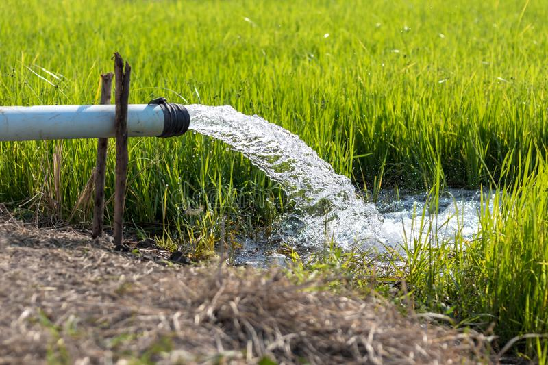
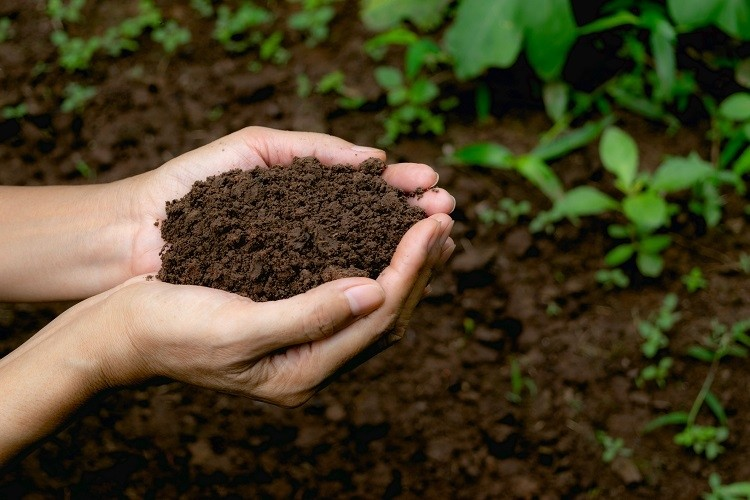
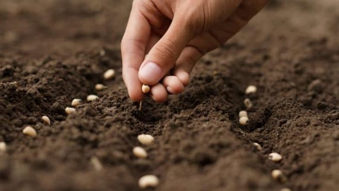
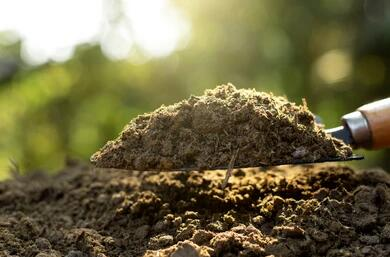

🎋 6 Pillars of Farming
🔆 Water, Soil, Seeds, Manure, Crops & Farmer Equipments are the six main pillars required for farming. We can say that these pillars are backbone of farming needed or required for agriculture work.

🌱 Water is a critical input for agricultural production and plays an important role in food security. While the essential nutrients,water,oxygen and root support that our food-producing plants need to grow and flourish. Seed farmers grow a crops in a way that optimizes the quantity and quality of its seed.
🌱 Manure contains nitrogen, phosphorus, and other nutrients that plants need to grow. Crop, In agriculture, a plant or plant product that can be grown and harvested extensively for profit or subsistence. Farm machinery, mechanical devices, including tractors and implements, used in farming to save labour.
Water

💧 Water is a critical input for agricultural production and plays an important role in food security. Irrigated agriculture represents 20 percent of the total cultivated land and contributes 40 percent of the total food produced worldwide. Irrigated agriculture is, on average, at least twice as productive per unit of land as rainfed agriculture, thereby allowing for more production intensification and crop diversification.
💧 Due to population growth, urbanization, and climate change, competition for water resources is expected to increase, with a particular impact on agriculture. Population is expected to increase to over 10 billion by 2050, and whether urban or rural, this population will need food and fiber to meet its basic needs. Combined with the increased consumption of calories and more complex foods, which accompanies income growth in the developing world, it is estimated that agricultural production will need to expand by approximately 70% by 2050. .
Soil

🌴 Agriculture is one of the most important components of our society. Farmers and ranchers produce the food and
fiber we use every day. Soil is a critical part of successful agriculture and is the original source of the nutrients that
we use to grow crops. The nutrients move from the soil into plants that we eat like tomatoes. Nutrients are also a
part of the food animals (like cows) eat. In the end, we benefit from healthy soil. The healthiest soils produce the
healthiest and most abundant food supplies.
🌴 Since the healthiest soils produce the most food, they have also been at the center of the best communities in
history. Ancient Egyptians had fresh nutrients delivered to their fields every year by the flooding of the Nile River.
This allowed farmers to use the same soils for a very long time. Some other ancient civilizations had soil that was
nutrient poor or didn’t hold much water. The health of these soils declined over time, and people had to move
away to farm new ground. Soils in dry climates are more likely to see a decline in nutrients, especially if irrigated.
The small amounts of salts and other chemicals found in water can build up in the soil over time if not carefully
managed. This process is called salinization.
Seeds

🍒 Seed is one of the most crucial elements in the livelihoods of agricultural communities. It is the repository of the genetic potential of crop species and their varieties resulting from the continuous improvement and selection over time. The potential benefits of seed to crop productivity and food security can be enormous.
🍒 In addition, production increases brought about by the use of adapted varieties increases farmers’ income when market linkages exist. Food security is heavily dependent on the seed security of the farming community.
🍒 A sustainable seed system will ensure that high quality seeds of a wide range of varieties and crops are produced and fully available in time and affordable to farmers and other stakeholders. However, in many developing countries farmers have not yet been able to fully benefit from the advantages of using quality seed due to a combination of factors, including inefficient seed production, distribution and quality assurance systems, as well as bottlenecks caused by a lack of good seed policy on key issues such as access to credit for inputs. Furthermore, the pressure from the fluctuating food prices and climate change creates additional challenges.
Manure

🐌 Manures are plant and animal wastes that are used as sources of plant nutrients. They release nutrients after their decomposition. The art of collecting and using wastes from animal, human and vegetable sources for improving crop productivity is as old as agriculture. Manures are the organic materials derived from animal, human and plant residues which contain plant nutrients in complex organic forms. Naturally occurring or synthetic chemicals containing plant nutrients are called fertilizers. Manures with low nutrient, content per unit quantity have longer residual effect besides improving soil physical properties compared to fertilizer with high nutrient content.
🐌 Major sources of manures are:
Cattle shed wastes-dung, urine and slurry from biogas plants
Human habitation wastes-night soil, human urine, town refuse, sewage, sludge and sullage
Poultry Jitter, droppings of sheep and goat
Slaughterhouse wastes-bone meal, meat meal, blood meal, horn and hoof meal, Fish wastes
Byproducts of agro industries-oil cakes, bagasse and press mud, fruit and vegetable processing wastes etc
Crop wastes-sugarcane trash, stubbles and other related material
Water hyacinth, weeds and tank silt, and
Green manure crops and green leaf manuring material
Manures can also be grouped, into bulky organic manures and concentrated organic manures based on concentration of the nutrients.
Crops

🌽 Farmers are faced with the challenge of producing sufficient crops to meet growing consumer demand while maintaining the quality and quantity of resources for future generations. Scientists at the U.S. Department of Agriculture are developing research-based technologies to help farmers increase productivity and production efficiency while practicing sustainable agriculture.
🌽 Field and forage (agronomic) crops are grown on most of the 200 million acres of harvested cropland in the United States. Agronomic crops provide the food, feed grain, oil, and fiber for domestic consumption and are a major component of U.S. export trade. Horticultural plants — those grown specifically for human use — offer variety to human diets and enhance the living environment.
🌽 Crop, In agriculture, a plant or plant product that can be grown and harvested extensively for profit or subsistence. By use, crops fall into six categories: food crops, for human consumption (e.g., wheat, potatoes); feed crops, for livestock consumption (e.g., oats, alfalfa); fibre crops, for cordage and textiles (e.g., cotton, hemp); oil crops, for consumption or industrial uses (e.g., cottonseed, corn); ornamental crops, for landscape gardening (e.g., dogwood, azalea); and industrial and secondary crops, for various personal and industrial uses (e.g., rubber, tobacco).
Farmer Equipments

🚜 Modern farmers have a huge range of equipment options for the various activities they do on an annual basis. From high-tech combine harvesters to simple tractors, the various kinds of farm equipment available can meet the needs of small-scale homesteaders and industrial-size farming operations alike. However, it can be difficult to keep track of all the options. New farmers especially may wonder what the different types of farming machinery are for. For small- and mid-size farms especially, determining the different types of farming machinery you may need to make your operations more efficient can be frustrating. While all the equipment available may seem confusing, knowing about the basic farm equipment options can be an enormous help. If you're looking into purchasing new or used farm equipment, take a look at this guide. We'll go over the different types of agricultural machines and their uses, as well as some of the options for small, mid-size and large-scale farming operations.